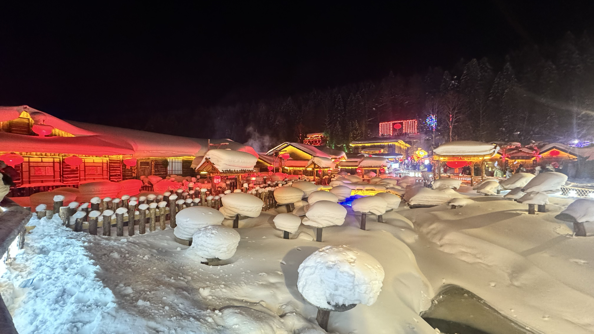

雪乡：两天一晚才成立
推荐的是厚雪木屋、暮色与第二天清晨。它不靠项目数量取胜。接受往返约 12 小时公路成本，才值得单独去。
不做当天往返；不为“全体验”购买娱乐大套票。

THE ROUTE & THE REASONS
这是一份行前方案：以下精确时刻用于衔接规划，只有成功出票 / 订单确认后才是承诺。酒店指定日期实时房价尚未取得，元旦高铁未开售，2026—2027 雪季班车与冰雪大世界票价仍需复核。
推荐的是厚雪木屋、暮色与第二天清晨。它不靠项目数量取胜。接受往返约 12 小时公路成本，才值得单独去。
不做当天往返；不为“全体验”购买娱乐大套票。
比纯看冰雕更有价值的是同一组建筑在天黑后变亮。午后进入，不为一条滑梯耗掉整晚。
周一安排是客流节奏判断，不保证一定人少。
不是这些地方不好，而是雪乡已占两天，剩余时间应留给冰城和休息。滑雪若成为主要诉求，需要另改路线。
偏好自然与自主节奏，不叠加表演、购物与赶场。
TWO DAYS OFF, FIVE DAYS AWAY
| 日期 | 安排 | 你需要做什么 |
|---|---|---|
| 2026/12/31 周四 | 正常上班 | 下班后整理行李；本方案不需要当晚赶飞机 |
| 2027/1/1 周五—1/3 周日 | 元旦休假 3 天 | 1 日出发，2—3 日去雪乡 |
| 1/4 周一、1/5 周二 | 请 2 个工作日年假 | 4 日冰雪大世界，5 日返京 |
| 1/6 周三 | 正常上班 | 参考高铁 5 日 20:55 到北京朝阳，之后仍要留回家时间 |
申请于 2027 年 1 月 4 日至 5 日休年假，共 2 个工作日，1 月 6 日正常到岗。我会在休假前完成相关工作，并将待办、值班与紧急事项做好交接，请审批。
THE CONNECTIONS
| 段落 | 首选参考 | 两人费用 | 下单状态 |
|---|---|---|---|
| 1/1 去程 | G105 · 北京朝阳 08:55 → 哈尔滨西 13:28 4 小时 33 分；07:55 前到出发站 | ¥605 × 2 = ¥1,210 | 当前参考 1/1 尚未开售 |
| 1/5 返程 | G124 · 哈尔滨西 16:20 → 北京朝阳 20:55 4 小时 35 分；15:20 前到站 | ¥584 × 2 = ¥1,168 | 当前参考 1/5 尚未开售 |
| 1/2 去雪乡 | 06:30 → 约12:30 中央大街集合 → 雪乡；具体站点以订单定位为准 | ¥120 × 2 = ¥240 | 往季参考 本季需确认 |
| 1/3 回哈尔滨 | 09:00 → 约15:00 雪乡指定游客服务中心集合 → 哈尔滨 | ¥120 × 2 = ¥240 | 往季参考 并非已锁定班次 |
高铁单程约 4.5 小时，无需计入托运行李、机场提前到达与较远的接驳。前次航班查询返回组合以晚班为主，有跨午夜到达，未得到适合这套日程的白天直飞报价，不能据此断言全市场没有合适航班。
改飞机的个人决策线：若两人往返含税、行李及机场接驳总费用不超过约 ¥2,800，且 1 日 13:00 前到哈尔滨、5 日 21:00 前到北京，可重新比较。这是本攻略的取舍标准，不是机票报价。
主方案：直通车。从市区一次上车，带一晚小包更省心；缺点是久坐。
备选：哈尔滨 → 亚布力西 → 雪乡。高铁加山路大巴，仍有换乘，不能把高铁车程当成全程。往季亚布力西至雪乡车票为 ¥85/人，高铁另买。必须先确认班车时刻，再买高铁，建议预留至少 60 分钟换乘。
山区段仍可能受天气影响，不因换乘就默认更快。
DAY BY DAY · WHAT, WHEN & HOW
时间表是建议执行窗口。列车按当前参考、雪乡班车按往季官方信息占位；所有已订时刻以实际订单替换。地图按钮是地点搜索，需要联网，不能代替司机发送的集合定位。
以 G105 为首选参考；两人二等座 ¥1,210。早餐在出发前解决，车上备水、轻食。北京住所未知，不编造出门时刻：按实时导航倒推，并保证至少提前 60 分钟到站。
出站至酒店按 60–90 分钟管理；有行李优先网约车，车费单独看实时预估。午餐选酒店附近快餐，预算两人 ¥80。诺富特地址：道里区兆麟街 57 号 6 层；到达前问清一层入口与前台楼层。
主选老昌春饼中央街店，公开地址中央大街 180 号；点春饼配京酱肉丝、鸡蛋或土豆丝，控制两人约 ¥140。门店营业和菜单临行复核，排队超过 30 分钟就换附近饺子 / 家常菜。
体感允许才去防洪纪念塔附近看江景，不进入未开放冰面。20:00 前回酒店；买好次日早餐、路餐，确认班车集合定位，联系酒店跨日寄存。
当天取舍 / 晚点处理：若抵达晚于 15:00，先删江边；晚于 17:00，则只留晚餐与教堂夜间外观。次日早班车优先于把第一天逛满。当天餐饮控制 ¥250 / 两人。
前夜先打包好。两人一晚小包带换洗、洗漱、保暖配件、证件、充电与药品；大箱寄存至 1/3，但必须事先获得酒店同意，拿寄存凭证。若不能寄存，就随车带箱并确认行李额度。
06:30 是往季班次占位，按实际订单提前至少 20 分钟到集合点。不要凭“中央大街上车”猜门牌；取得准确定位、车牌 / 车辆识别方式。车程按 6 小时，雪天可能延长，前半程先吃早餐。
雪乡门票现行 ¥140/人，往返观光车 ¥15/人自愿购买，两人按 ¥310 计。按所乘班车到达山门和酒店指引接驳，不能假定长途车停在房门口。午餐两人 ¥80，14:00 后办理入住。
先走村内主街，熟悉酒店到街区的回程。雪蘑菇、木屋和红灯笼是重点，不用把雪地摩托、马拉爬犁都买一遍。额外项目先问“按人还是整车、多久、最终总价”。
这一段专门留给拍照。若开放，可走现场允许通行的观景步道；栈道入口、是否收费、冰滑情况现场复核。梦幻家园等收费区与大门票分开，照片中的机位未必都免费。
先吃酒店或主街明码标价的东北家常菜，预算两人 ¥120；18:00 后体感允许再出门 45–60 分钟。只把官方当天公布的演出视作可选，不为等节目一直站在室外。
当天取舍 / 晚点处理：1/1 晚如果承运方确认封路 / 停运，取消进山，按退改条款处理雪乡房间，1/2 改市区。若到雪乡已晚于 15:00，先入住、吃饭，删白天绕行，保留夜景；不加价追赶路上的娱乐点。当天餐饮 ¥240 / 两人。
只走酒店附近，07:45 开始返回；若早餐 07:00 才开，先吃再拍，避免在严寒中空腹久待。雪韵阁公开页面早餐时段为 07:00–08:30，具体以入住时确认为准。
前晚确认是哪个山门 / 游客中心上车、是否需观光车、从酒店步行多久。即使主街很近，也给出景区与候车留至少 40–60 分钟；实际集合时间优先。
用往季 09:00 首班做规划，返程先买好。两人 ¥240 仅为往季参考。车上解决简单午餐，不加沿线购物和大秃顶子山项目。
回到同一家诺富特，取寄存行李。回城房间从 1/3 开始连住两晚，不必重复搬家；若班车到达点远，按导航补一段网约车。
主选华梅西餐厅，中央大街 112 号。点红菜汤、罐焖肉 / 一道主菜和面包，两人预算 ¥240；并非实时菜单价。若等位超过 30 分钟，改西七道街 53 号的波特曼，仍先看菜单。
当天取舍 / 晚点处理：晚于 17:30 才回城，取消俄餐排队，改酒店附近热食。山区返程延误到次日时，优先安全回城，再调整 1/4 景点，不赶夜路。当天餐饮 ¥320 / 两人。
不安排清晨早市。今天主要任务是长时间看冰雕；先吃好、穿好，再出发。若身体疲劳，缩短园内时长，保留亮灯后的核心观赏。
酒店附近吃热食，全天早午餐合计控制两人 ¥80 左右；不以预约项目为由跳过午餐。随身保温杯、手套、备用电池，贵重物随身。
主选地铁 2 号线到冰雪大世界站。诺富特并不在中央大街地铁站口：先看地图步行距离，不想走可网约车；全段按约 1 小时规划。出站口以景区当季指引为准。
先拍主建筑，按当天规则选择一个最想玩的项目。滑梯 / 摩天轮是否包含、是否需预约、排队多久都以本届公告为准，不照搬上一届攻略。排队预估超过 60 分钟就放弃该项目。
主动安排一次取暖，园内热食与热饮两人预留 ¥100。当天亮灯时间没有确认，不把 16:30 当作官方开灯时刻；休息后再看天色选择拍摄路线。
主看夜景，按体力在 18:30–19:00 离园；回程留 60–90 分钟，避开散场集中打车。晚餐简餐两人 ¥70 预算；若太冷，提前离园也不影响这天核心体验。
当天取舍 / 晚点处理：本季票价未核实，预算先按上一届 ¥328/人。若本季未开园、暂停运营或恶劣天气，改室内休息与城市建筑 / 餐饮；不把室内冰雪馆冒充同等规模的冬季园区。当天餐饮 ¥250 / 两人。
打车或按导航乘公共交通到老道外，只逛街区建筑与院落；普通街区步行不预留门票，单独展馆 / 商业空间可能收费。与中央大街风格不同，值得看一段，不必再买套票。
就近选明码标价的饺子 / 面食，两人午餐约 ¥80；不为一家远店横穿城区。若仍想买红肠、大列巴，在正规门店看保质期后少量购买，购物不计入基础预算。
哈尔滨西 → 北京朝阳。两人二等座当前参考 ¥1,168。高铁上备轻食；此时刻仅作元旦开售前的选择目标。
北京朝阳站之后仍需接驳回家，别把 20:55 当作到家时间。次日正常上班，所以不选跨午夜落地的低价航班。当天早餐 + 午餐 + 零食合计 ¥140 / 两人。
当天取舍 / 晚点处理：若需要晚起或体力一般，直接删中华巴洛克，改教堂补拍和附近午餐。14:15 出发去车站是优先级最高的时间点，不能被购物或等位挤掉。
WHERE TO STAY
HARBIN · 3 NIGHTS
地址：道里区兆麟街 57 号 6 层。靠近索菲亚教堂，老城吃饭拍照顺路。选择它的理由是位置与连住便利，不是已证明它全城性价比最高。
分两单：1/1 入住—1/2 退房（1 晚）；1/3 入住—1/5 退房（2 晚）。不要误订成 1/1—1/5 连住，否则去雪乡那晚会空付。
预算 ¥800 / 间晚
3 晚 ¥2,400；指定日期房价、税费、双早与取消截止均未核实。优先选可取消房型，不把“有窗”视作“教堂景观房”。
XUEXIANG · 1 NIGHT
位置：雪乡景区内雪韵大街。看完夜景可回房，不需要当晚再走山路。上图是雪乡景观，不是该酒店客房照；尚未取得当前房型实拍，不以景观图替代客房判断。
1/2 入住—1/3 退房，2 人 1 间。优先双床 / 大床、独立卫浴；炕房仅在两人都想体验时选，问清独用还是拼住。
预算 ¥1,200 / 间晚
这只是本方案预留，不是酒店报价。平台当前房况未核实；若高于 ¥1,500，先比较同区域独卫房，再决定是否值得，不默认加预算。
EAT ALONG THE ROUTE
这些是顺路的主选与备选，不保证元旦营业和无需排队。餐厅地址参考公开页面，到店前用地图核对具体分店；没有取得菜品实拍，页面不拿别店菜图冒充。
| 日期 / 两人额度 | 早餐 | 午餐 | 晚餐 | 加餐 / 备选 |
|---|---|---|---|---|
| 1/1 · ¥250 | 出发前 / 高铁自备，不占行程 | 酒店附近快餐，¥80 | 老昌春饼，中央大街 180 号；¥140。薄饼 + 两盘菜，排队超 30 分钟换饺子。地图搜索 ↗ | 热饮 / 小食 ¥30 |
| 1/2 · ¥240 | 前夜买好，车上早餐 ¥40 | 雪乡主街明码标价简餐 ¥80 | 酒店 / 雪韵大街家常菜 ¥120；先确认份量与总价，不点价目不清的野味 | 不安排冷风里等演出 |
| 1/3 · ¥320 | 雪乡酒店；未含早先预留 ¥40 | 返程路餐 ¥40 | 华梅西餐厅，中央大街 112 号；¥240。红菜汤 + 罐焖肉 / 主菜 + 面包。地图搜索 ↗ | 备选波特曼：西七道街 53 号。只选一家。地图搜索 ↗ |
| 1/4 · ¥250 | 睡够再吃，早午餐合计 ¥80 | 园内热食 + 热饮，两人 ¥100 | 回城附近简餐 ¥70；若提前离园，可把园内额度挪到晚餐 | 不另跨城排队 |
| 1/5 · ¥140 | 早餐 ¥40 | 中华巴洛克附近饺子 / 面食 ¥80 | 返程自备少量轻食，随实际消费从备用金调整 | 小食 ¥20；伴手礼另计 |
BOOKING PLAYBOOK
| 什么时候 | 处理什么 | 做到什么才算完成 |
|---|---|---|
| 现在 | 两人请假 + 住宿可取消方案 | 年假获批；酒店分段总价、取消截止和雪乡房型明确 |
| 班车放票后 | 先锁定 1/2、1/3 两程 | 拿到真实班次、两端定位和天气退款规则，预算 ¥480 随报价更新 |
| 12/18 · 具体时刻见12306 | 买 1/1 去程高铁 | 两人出票；失败用同时间段快车候补，不先买中转冒险衔接 |
| 12/22 · 具体时刻见12306 | 买 1/5 返程高铁 | 两人出票；优先当晚 22:00 前到北京，次日要上班 |
| 12 月下旬 / 景区开售后 | 核实 1/4 冰雪大世界 | 确认本季票价、开放、入园与项目预约规则 |
| 12/31 晚 / 1/1 晚 | 复核天气、山路、集合、酒店寄存 | 雪乡房间和班车不能各自确认却互相接不上 |
我们是两位成人，计划 2027 年 1 月 1 日入住、1 月 2 日退房，1 月 3 日再入住至 1 月 5 日，共 3 晚、1 间房。请分别报价并说明房型、税费、双早和免费取消截止。1 月 2 日约 05:45 退房去雪乡，能否免费寄存大箱子至 1 月 3 日约 16:00？请确认寄存位置、夜间前台、物品限制和凭证。另请发准确的一层入口定位与办理入住楼层。
只复制到剪贴板，不会自动发送消息或生成订单。
我们两位成人，2027 年 1 月 2 日入住、1 月 3 日退房，需要 1 间独立卫浴双床 / 大床房，不接受拼住。请提供当前房间与卫生间实拍、所在楼栋、是否在景区内、供暖方式、两人含税总价、是否含双早、早餐时间和取消截止。约 12:30 到达可否先寄存？乘直通车从哪个山门进入、如何到酒店、需不需要观光车？1 月 3 日计划坐约 09:00 返程车，请确认出景区所需时间。若天气封路，退款或改期如何处理？
只复制到剪贴板，不会自动发送消息或生成订单。
请确认 2027 年 1 月 2 日哈尔滨至雪乡、1 月 3 日雪乡至哈尔滨的班次，我们共 2 人。希望去程约 06:30、返程约 09:00。请回复：准确出发 / 到达站点定位、预计全程时间、两人两程最终总价、是否有购物或自费停靠、行李额度、提前多久集合、车辆识别方式、天气停运及乘客取消的退款规则。若班次与上述不同，请提供可选班次；不自行视为已经订妥。
只复制到剪贴板，不会自动发送消息或生成订单。
A BUDGET YOU CAN CHANGE
所有输入均为两人合计、人民币。酒店费用可直接替换成对应 3 晚 / 1 晚总价；填 0 表示该项不发生，未填或负数会提示修正。
| 项目 · 两人合计 | 人民币 / 元 |
|---|---|
ON THE GROUND
BEFORE YOU LEAVE
已完成 0 / 8 项
EVIDENCE & FRESHNESS
| 信息 | 采用内容 | 时效与局限 | 原始页面 |
|---|---|---|---|
| 官方放假 | 2027 年元旦 1/1—3，三天 | 官方通知转载；本次读取 | 新华网 / 中国政府网 ↗ |
| 铁路售票 | 预售 15 天（含当天）及各站起售查询 | 现行规则，调图 / 起售以12306为准 | 12306 ↗ |
| 高铁去程 | G105 08:55—13:28，当前参考 ¥605 | 当前页面；不是 2027/1/1 报价 | 同程 ↗ |
| 高铁返程 | G124 16:20—20:55，当前参考 ¥584 | 当前页面；不是 2027/1/5 报价 | 去哪儿 ↗ |
| 雪乡大巴 | 去程 06:30—12:30、返程首班09:00；¥120/人次 | 2024/11 官方文章；往季资料 | 黑龙江文旅厅 ↗ |
| 雪乡门票 | 旺季 ¥140；往返观光车 ¥15、自愿购买 | 2025/9/13 官方调价公告；付款前复核有无新公告 | 雪乡官方服务号 ↗ |
| 冰雪大世界 | 官网展示第二十七届 ¥328 标准票 | 上一届占位；第二十八届票价未核实 | 景区官网 ↗ |
| 哈尔滨酒店 | 诺富特房型、位置 | 官网；指定入住日期报价未核实 | 雅高 ↗ |
| 雪乡酒店 | 雪韵阁位置、入住、早餐参考 | 平台公开页面；指定日期房价和房型未核实 | 携程 ↗ |
| 餐厅 | 华梅、波特曼等地址参考 | 2024/2 美食地图；营业与菜单需临行复核 | 哈尔滨广播电视台 ↗ |
照片用于个人旅行参考，保留原始来源，不宣称开放授权。在线版图片随页面托管；离线单文件版保留在本机，地图与预订页需要联网。